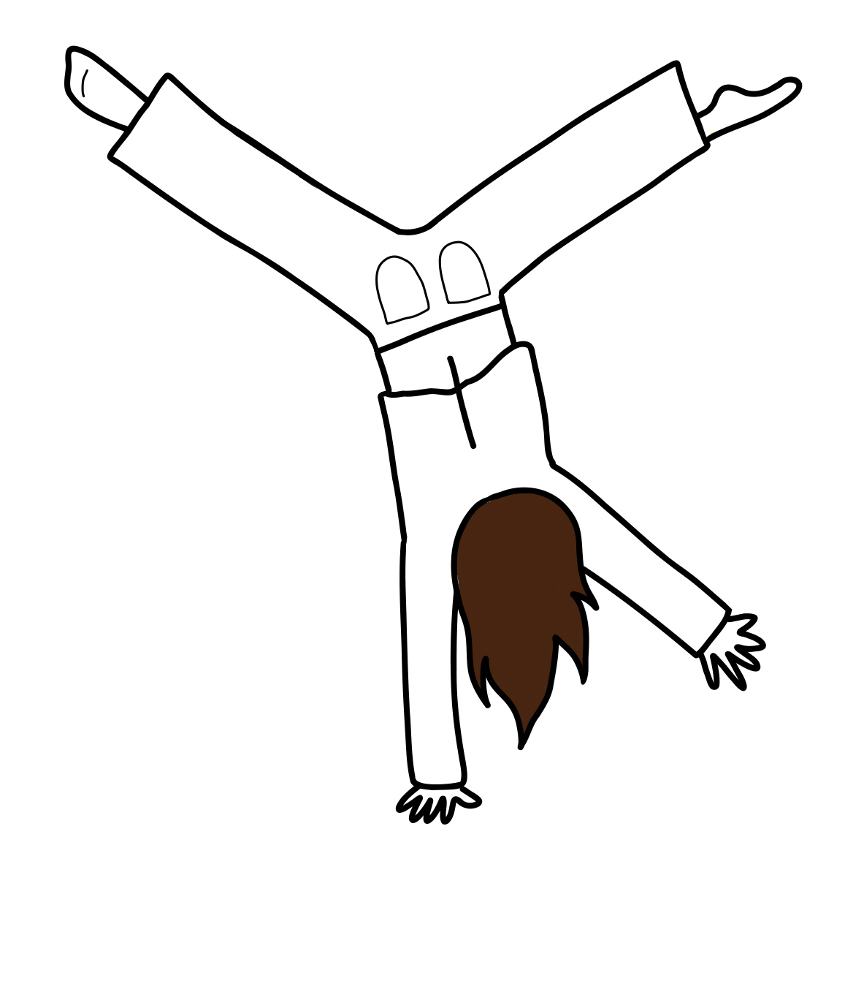

À PROPOS DE MOI
Bonjour !
Je m'appelle Eugénie Fernet, je suis en troisième année de design graphique à l'École Supérieure d'Art et de Design d'Amiens. Curieuse et créative, j'aime expérimenter, composer, et tester de nouvelles approches. J'apprécie particulièrement de créer un projet de sa conception à sa réalisation (choix des couleurs, du papier, impression, reliure).
Je fais aussi beaucoup de photographie (numérique et argentique). J'aime jouer avec la lumière et explorer différentes esthétiques visuelles.